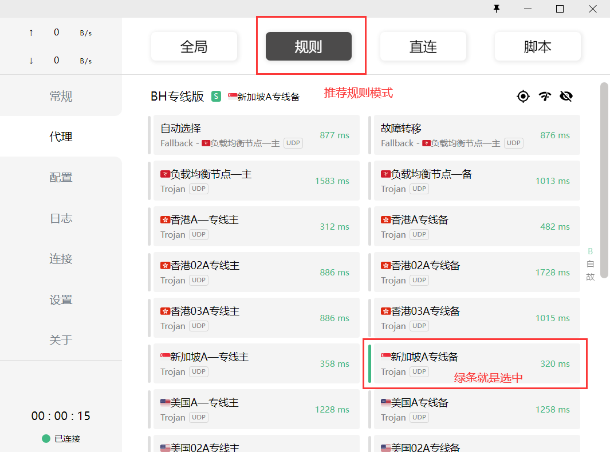
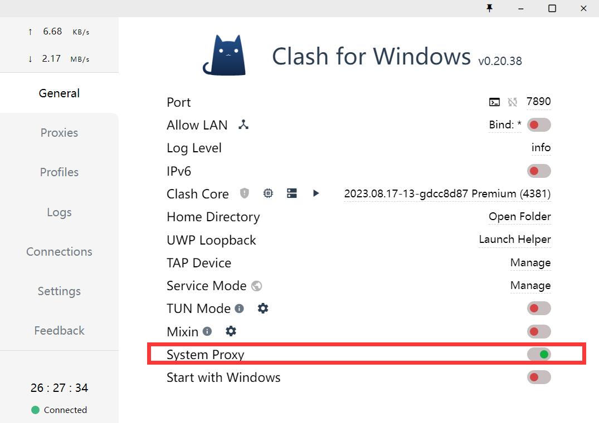
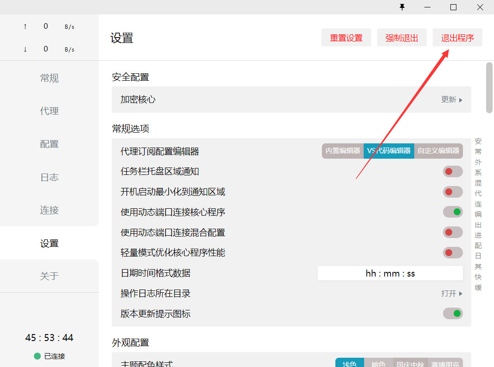
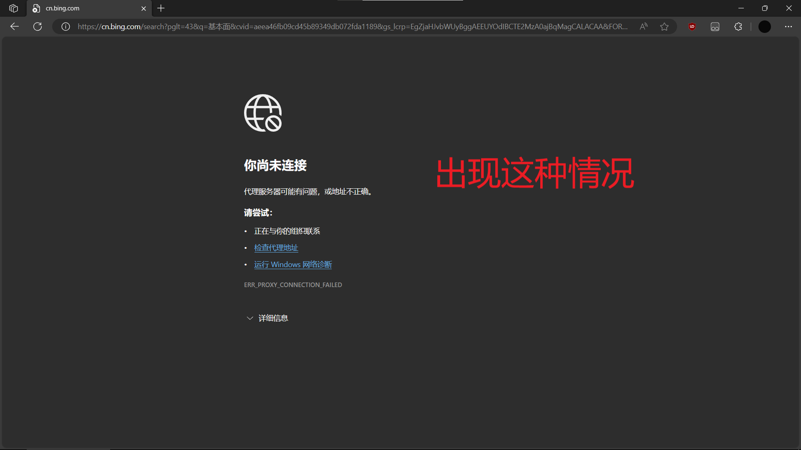
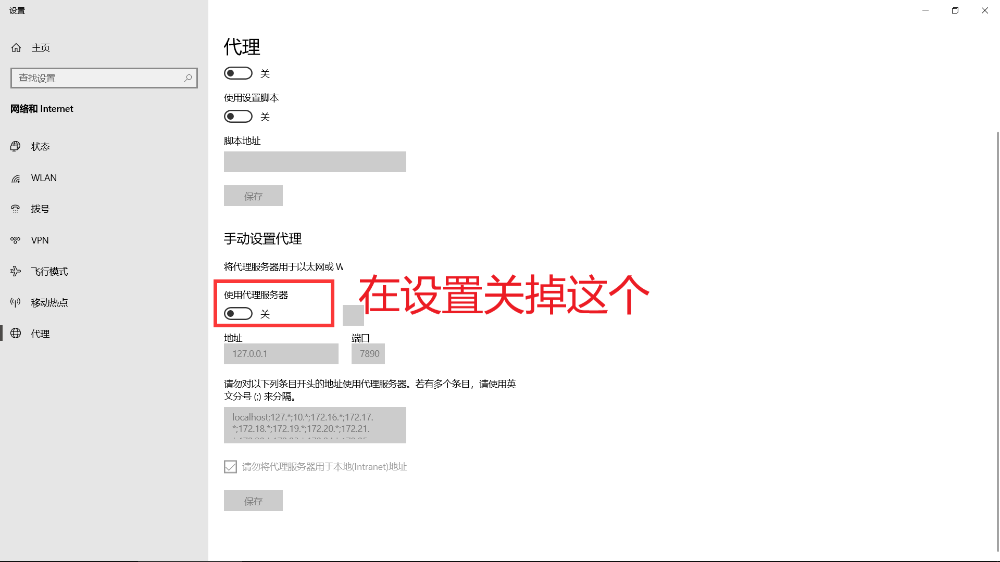
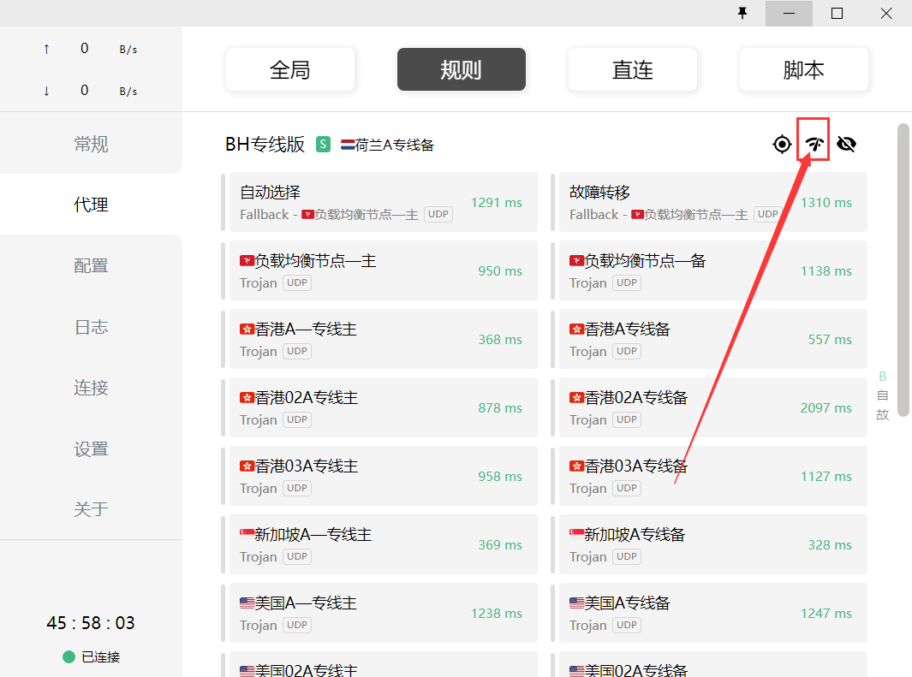
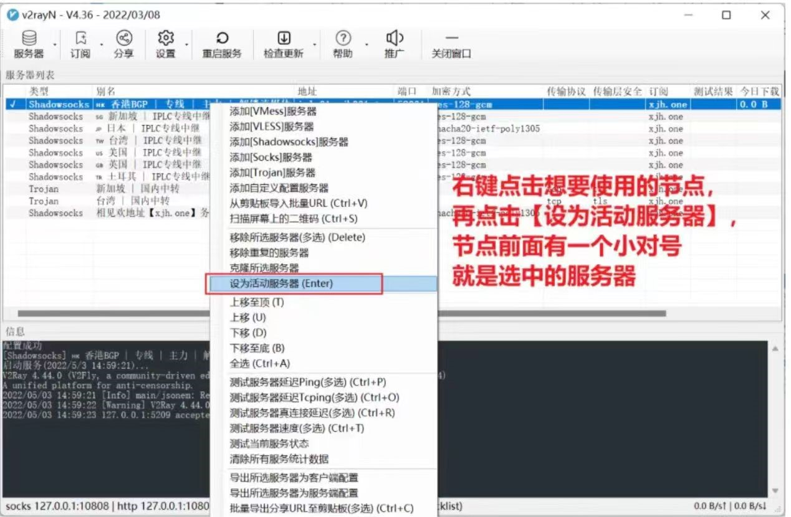

若打不开梯子网站试试切换浏览器或网络
体验卡不适用，有很多bug，请购买正式版！
挑选节点（前四个节点不用看；还有香港不能上 ChatGPT）：

关掉梯子（如图关闭系统代理[System Proxy]，图二是关闭clash）：
 
有时候直接关会出bug没关掉，可以手动关代理
 
节点显示超时[timeout](尝试以下两种方法，还是没用就进网站重新导入订阅)

这里只用了Windows端clash为例，其他基本类似
附：v2rayN界面切换节点
